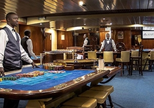

` CASINO DU PORT DAKAR
Le Casino du Port est niché au cœur de Dakar et offre à ses clients un environnement propice pour le plaisir et la détente.
Une large sélection de jeux est disponible dans la salle de jeux dont une centaine de machines à sous, machines à rouleaux, vidéo poker, le bingo électronique et la roulette électronique.
Tous les jours, 4 cagnottes mystérieuses peuvent être remportées sur les machines à sous multi-jeux. La décoration de la salle des machines se veut moderne et idéale pour de longues parties.
Du coté des tables de jeux, le casino du Port dispose de 2 tables de Roulette Anglaise, 1 de Blackjack, 1 d'Ultimate Poker et 1 de Stud Poker. Ouverte de 18h à 3h en semaine, et de 16h à 3h le week-end, elles sont une bonne occasion de se divertir tout en se mesurant aux meilleurs joueurs.
Le casino du Port est l'un des établissements les plus actifs du continent africain en terme de Poker. En effet, un grand nombre de tournois sont organisés dans sa Poker Room tout au long de l'année. Sur les tables de Texas Hold'em la mise minimale en cash games est fixée à 500F.
Au casino en général, le divertissement est quotidien avec des soirées bingo ou loto, des jeux et des spectacles festifs à l'image de la tradition sénégalaise.
Autres casinos à proximité : Café de Rome Casino Dakar (864m), Casino & Resort Terrou-Bi - Dakar (4km), Red Games Casino Dakar (5km), Cap Vert Casino Dakar & Hotel (12km), Terrou Saly Casino M'bour (51km)
En savoir plus sur : Les jeux, Equipements et Services, Le Poker, Les restaurants et bars, Animations et Spectacles.
